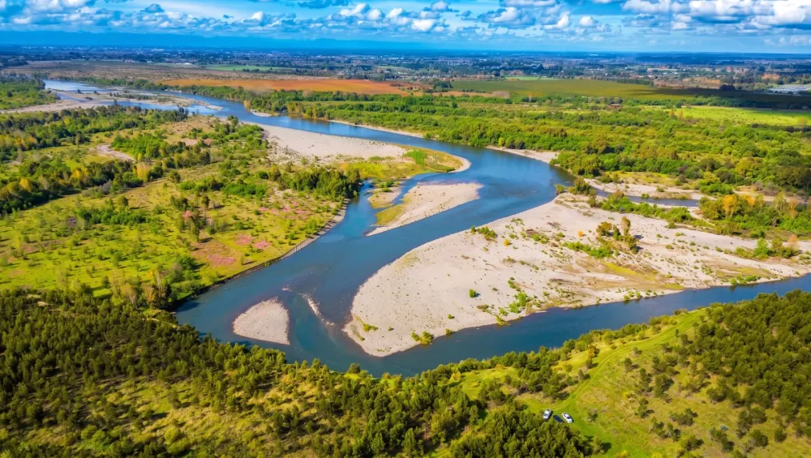

Parcelas a pocos minutos de Chillán
Dos proyectos con parcelas desde 5.000 m² entre campo, río y cordillera, para desconectarte de la ciudad sin alejarte de ella.
Dos proyectos cerca de Chillán
Cada proyecto tiene su propia página con el plano de lotes, precios, ubicación y contacto directo con su equipo de ventas.
El Quillay
Lotes desde media hectárea con caminos interiores ya trazados, entre campo abierto y bosque.
Conocer El Quillay
Mirador del Ñuble
Parcelas entre bosque y lomajes suaves, con vista al río y a la cordillera.
Conocer Mirador del ÑubleCómo trabajamos
-
Elegimos el terreno
Buscamos campos con buen acceso, cerca de Chillán y de la Ruta 5.
-
Subdividimos y medimos
Cada lote queda con su número y su superficie según el plano oficial de la subdivisión.
-
Preparamos el loteo
Trazamos los caminos interiores para que puedas recorrer el terreno y ver tu lote antes de decidir.
-
Firmamos contigo
Reserva, promesa y escritura, todo ante notario.
Lo que sabes antes de comprar
-
El plano de cada lote
Ves qué lote es, cuánto mide y dónde está antes de ir al terreno.
-
Qué está disponible
Los lotes vendidos aparecen marcados en el plano de cada proyecto.
-
Todo ante notario
Desde el primer pago, cada paso de la compra queda por escrito.
-
Cómo pagar
Pie y cuotas según el proyecto. Te mostramos las opciones antes de reservar.
¿Quieres visitar un proyecto?
Entra al proyecto que te interesa: ahí están los lotes disponibles, los precios y el contacto directo con su equipo de ventas para coordinar tu visita.
Otras consultas: ventas@propertymaps.cl